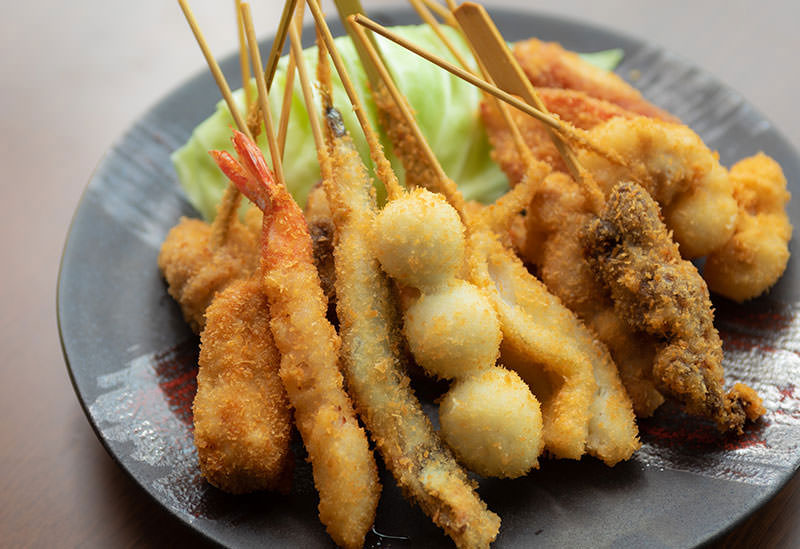

Kushikatsu

Kushikatsu, the Japanese shish kabob
Enjoy the meat, vegetable, or even cheese of your choice
skewerd on a pointy stick and deepfried.
Another favorite from the Kansai region, kushikatsu
can give you a real taste of South Osaka.
Ingredients
- Beef cut or
- Pork cut
- Chicken cut or
- Any kind of vegetable or
- Cheese
Steps
- Deepfry until not raw but not totally burned either
- Serve on grated metal plate
- Apply tonkatsu sauce to your liking